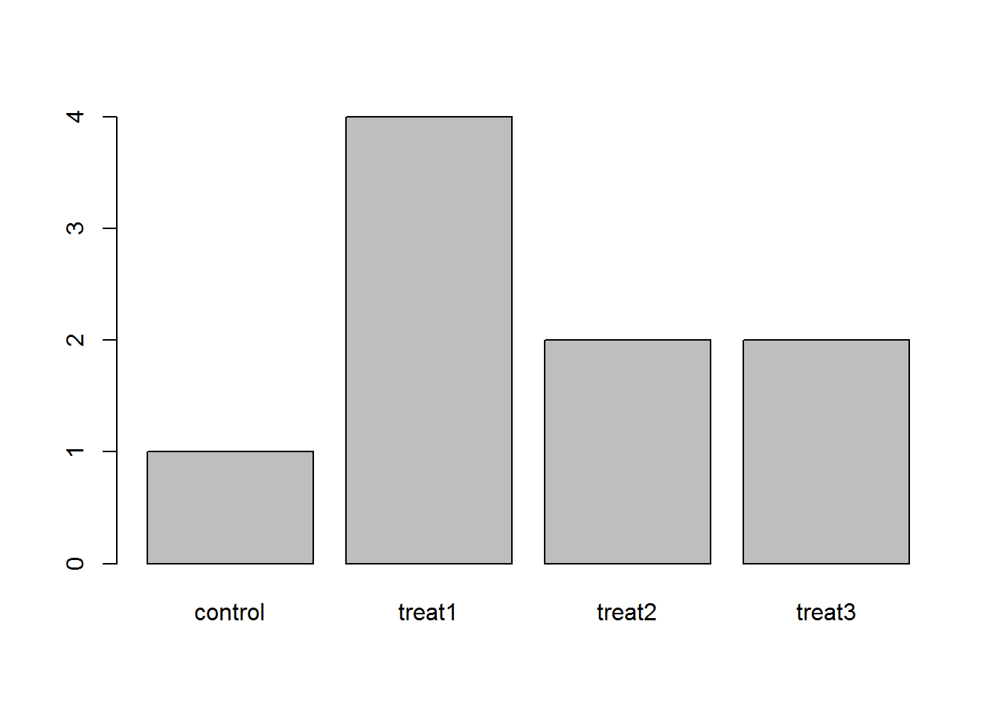
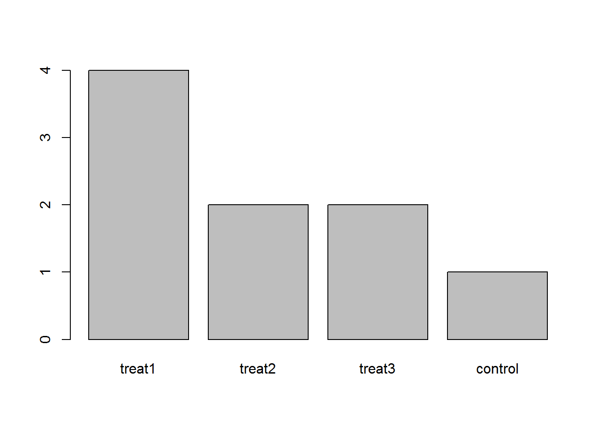

Learning Objectives
- Load external tabular data from a .csv file into R.
- Describe what an R data frame is.
- Summarize the contents of a data frame in R.
- Manipulate categorical data in R using factors.
We will be looking at a modified version of the metadata of the gene knockout study. The aim of this study was to determine whether knocking out the protein ‘chemerin’ affects gut microbial composition. In total, 116 mouse samples were acquired from two different facilities. Metadata associated with each sample is indicated in the mapping file (mouse_mapfile.txt), which we will download using RStudio. In this mapping file the genotypes of interest can be seen: wildtype (WT), chemerin knockout (chemerin_KO), chemerin receptor knockout (CMKLR1_KO) and a heterozygote for the receptor knockout (HET). Also of importance are the two source facilities: “BZ” and “CJS”. It is generally a good idea to include as much metadata as possible, since this data can easily be explored later on.
The metadata mapping file of this dataset is stored as a comma separated value (CSV) file. Each row holds information for a single mouse, and the columns represent:
| Column | Description |
|---|---|
| SampleID | Unique id for each sample |
| BarcodeSequence | Barcode sequence used for each sample (NA) |
| LinkerPrimerSequence | Linker/primer sequence used to amplify the sample (NA) |
| FileInput | Name of .fastq input file |
| Source | BZ or CJS |
| Mouse | Unique number for each mouse |
| Sex | Sex of each mouse |
| Weight | Weight of each mouse in grams |
| Cage | Cage number (NA) |
| Genotype | WT, chemerin_KO, CMKLR1_HE, or CMKLR1_KO |
| SamplingWeek | Week in which mouse was sampled |
| Description | Unique id for each mouse |
We are going to use the R function download.file() to download the CSV file that contains the metadata, and we will use read.csv() to load into memory the content of the CSV file as an object of class data.frame.
To download the metadata into the data/ subdirectory, run the following:
download.file("https://raw.githubusercontent.com/BinxiePeterson/introduction-to-R-for-16S/gh-pages/mouse_mapfile.csv",
"data/metadata.csv")You are now ready to load the data. We are going to use the R function read.csv() to load the data file into memory (as a data.frame):
metadata <- read.csv('data/metadata.csv', header = TRUE)This statement doesn’t produce any output because assignment doesn’t display anything. If we want to check that our data has been loaded, we can print the variable’s value: metadata
Alternatively, wrapping an assignment in parentheses will perform the assignment and display it at the same time.
(metadata <- read.csv('data/metadata.csv'))## SampleID BarcodeSequence LinkerPrimerSequence
## 1 100CHE6KO NA NA
## 2 101CHE6WT NA NA
## 3 102CHE6WT NA NA
## 4 103CHE6KO NA NA
## 5 104CHE6KO NA NA
## 6 105CHE6WT NA NA
## 7 106CHE6WT NA NA
## 8 107CHE6KO NA NA
## 9 108CHE6KO NA NA
## 10 109CHE6WT NA NA
## 11 10CMK6KO NA NA
## 12 110CHE6WT NA NA
## 13 111CHE6KO NA NA
## 14 112CHE6KO NA NA
## 15 113CHE6WT NA NA
## 16 114CHE6WT NA NA
## 17 115CHE6KO NA NA
## 18 116CHE6KO NA NA
## 19 11CMK6WT NA NA
## 20 12CMK6WT NA NA
## 21 13CMK6HET NA NA
## 22 14CMK6KO NA NA
## 23 15CMK6HET NA NA
## 24 16CMK6KO NA NA
## 25 17CMK6WT NA NA
## 26 18CMK6KO NA NA
## 27 19CMK6WT NA NA
## 28 1CMK6WT NA NA
## 29 20CMK6KO NA NA
## 30 21CMK6WT NA NA
## 31 22CMK6KO NA NA
## 32 23CMK6WT NA NA
## 33 24CMK6KO NA NA
## 34 25CMK6KO NA NA
## 35 26CMK6WT NA NA
## 36 27CMK6WT NA NA
## 37 28CMK6KO NA NA
## 38 29CMK6WT NA NA
## 39 2CMK6KO NA NA
## 40 30CMK6KO NA NA
## 41 31CMK6WT NA NA
## 42 32CMK6KO NA NA
## 43 33CMK6WT NA NA
## 44 34CMK6KO NA NA
## 45 35CMK6KO NA NA
## 46 36CMK6WT NA NA
## 47 37CMK6WT NA NA
## 48 38CMK6KO NA NA
## 49 39CMK6KO NA NA
## 50 3CMK6WT NA NA
## 51 40CMK6WT NA NA
## 52 41CMK8WT NA NA
## 53 42CMK8KO NA NA
## 54 43CMK8WT NA NA
## 55 44CMK8KO NA NA
## 56 45CMK8WT NA NA
## 57 46CMK8WT NA NA
## 58 47CMK8KO NA NA
## 59 48CMK8KO NA NA
## 60 49CMK8KO NA NA
## 61 4CMK6KO NA NA
## 62 50CMK8KO NA NA
## 63 51CMK8WT NA NA
## 64 52CMK8WT NA NA
## 65 53CMK8HET NA NA
## 66 54CMK8KO NA NA
## 67 55CMK8HET NA NA
## 68 56CMK8KO NA NA
## 69 57CMK8WT NA NA
## 70 58CMK8KO NA NA
## 71 59CMK8WT NA NA
## 72 5CMK6WT NA NA
## 73 60CMK8KO NA NA
## 74 61CMK8WT NA NA
## 75 62CMK8KO NA NA
## 76 63CMK8WT NA NA
## 77 64CMK8KO NA NA
## 78 65CMK8KO NA NA
## 79 66CMK8WT NA NA
## 80 67CMK8WT NA NA
## 81 68CMK8KO NA NA
## 82 69CMK8WT NA NA
## 83 6CMK6WT NA NA
## 84 70CMK8KO NA NA
## 85 71CMK8WT NA NA
## 86 72CMK8KO NA NA
## 87 73CMK8WT NA NA
## 88 74CMK8KO NA NA
## 89 75CMK8KO NA NA
## 90 76CMK8WT NA NA
## 91 77CMK8WT NA NA
## 92 78CMK8KO NA NA
## 93 79CMK8KO NA NA
## 94 7CMK6KO NA NA
## 95 80CMK8WT NA NA
## 96 81CHE6WT NA NA
## 97 82CHE6WT NA NA
## 98 83CHE6KO NA NA
## 99 84CHE6KO NA NA
## 100 85CHE6WT NA NA
## 101 86CHE6WT NA NA
## 102 87CHE6KO NA NA
## 103 88CHE6KO NA NA
## 104 89CHE6WT NA NA
## 105 8CMK6KO NA NA
## 106 90CHE6WT NA NA
## 107 91CHE6KO NA NA
## 108 92CHE6KO NA NA
## 109 93CHE6WT NA NA
## 110 94CHE6WT NA NA
## 111 95CHE6KO NA NA
## 112 96CHE6KO NA NA
## 113 97CHE6WT NA NA
## 114 98CHE6WT NA NA
## 115 99CHE6KO NA NA
## 116 9CMK6KO NA NA
## FileInput Source Mouse Sex Weight Genotype
## 1 100CHE6KO_S357_L001_R1_001.fastq BZ 100 F NA chemerin_KO
## 2 101CHE6WT_S368_L001_R1_001.fastq BZ 101 F 20.6 WT
## 3 102CHE6WT_S291_L001_R1_001.fastq BZ 102 M NA WT
## 4 103CHE6KO_S302_L001_R1_001.fastq BZ 103 M 19.7 chemerin_KO
## 5 104CHE6KO_S313_L001_R1_001.fastq BZ 104 M NA chemerin_KO
## 6 105CHE6WT_S325_L001_R1_001.fastq BZ 105 NA WT
## 7 106CHE6WT_S336_L001_R1_001.fastq BZ 106 F NA WT
## 8 107CHE6KO_S347_L001_R1_001.fastq BZ 107 M 22.8 chemerin_KO
## 9 108CHE6KO_S358_L001_R1_001.fastq BZ 108 F 22.4 chemerin_KO
## 10 109CHE6WT_S369_L001_R1_001.fastq BZ 109 M 21.6 WT
## 11 10CMK6KO_S231_L001_R1_001.fastq CJS 10 F 23.5 CMKLR1_KO
## 12 110CHE6WT_S292_L001_R1_001.fastq BZ 110 F 24.1 WT
## 13 111CHE6KO_S303_L001_R1_001.fastq BZ 111 F 20.8 chemerin_KO
## 14 112CHE6KO_S314_L001_R1_001.fastq BZ 112 F 20.5 chemerin_KO
## 15 113CHE6WT_S326_L001_R1_001.fastq BZ 113 F 19.5 WT
## 16 114CHE6WT_S337_L001_R1_001.fastq BZ 114 M 19.2 WT
## 17 115CHE6KO_S348_L001_R1_001.fastq BZ 115 M 18.2 chemerin_KO
## 18 116CHE6KO_S359_L001_R1_001.fastq BZ 116 M 20.7 chemerin_KO
## 19 11CMK6WT_S243_L001_R1_001.fastq CJS 11 F 21.8 WT
## 20 12CMK6WT_S255_L001_R1_001.fastq CJS 12 M NA WT
## 21 13CMK6HET_S267_L001_R1_001.fastq CJS 13 F 22.4 CMKLR1_HE
## 22 14CMK6KO_S279_L001_R1_001.fastq CJS 14 F 22.6 CMKLR1_KO
## 23 15CMK6HET_S196_L001_R1_001.fastq CJS 15 M 23.9 CMKLR1_HE
## 24 16CMK6KO_S208_L001_R1_001.fastq CJS 16 M 23.5 CMKLR1_KO
## 25 17CMK6WT_S220_L001_R1_001.fastq CJS 17 M 22.6 WT
## 26 18CMK6KO_S232_L001_R1_001.fastq CJS 18 M 21.8 CMKLR1_KO
## 27 19CMK6WT_S244_L001_R1_001.fastq CJS 19 F 21.4 WT
## 28 1CMK6WT_S218_L001_R1_001.fastq CJS 1 M NA WT
## 29 20CMK6KO_S256_L001_R1_001.fastq CJS 20 M 22.3 CMKLR1_KO
## 30 21CMK6WT_S268_L001_R1_001.fastq CJS 21 M 23.2 WT
## 31 22CMK6KO_S280_L001_R1_001.fastq CJS 22 F 19.5 CMKLR1_KO
## 32 23CMK6WT_S197_L001_R1_001.fastq CJS 23 F 18.4 WT
## 33 24CMK6KO_S209_L001_R1_001.fastq CJS 24 F 19.8 CMKLR1_KO
## 34 25CMK6KO_S221_L001_R1_001.fastq CJS 25 20.5 CMKLR1_KO
## 35 26CMK6WT_S233_L001_R1_001.fastq CJS 26 NA WT
## 36 27CMK6WT_S245_L001_R1_001.fastq CJS 27 M 20.6 WT
## 37 28CMK6KO_S257_L001_R1_001.fastq CJS 28 M 21.7 CMKLR1_KO
## 38 29CMK6WT_S269_L001_R1_001.fastq CJS 29 M 23.6 WT
## 39 2CMK6KO_S230_L001_R1_001.fastq CJS 2 F 22.4 CMKLR1_KO
## 40 30CMK6KO_S281_L001_R1_001.fastq CJS 30 F 21.5 CMKLR1_KO
## 41 31CMK6WT_S198_L001_R1_001.fastq CJS 31 M 22.6 WT
## 42 32CMK6KO_S210_L001_R1_001.fastq CJS 32 F 23.5 CMKLR1_KO
## 43 33CMK6WT_S222_L001_R1_001.fastq CJS 33 M 21.5 WT
## 44 34CMK6KO_S234_L001_R1_001.fastq CJS 34 M 20.8 CMKLR1_KO
## 45 35CMK6KO_S246_L001_R1_001.fastq CJS 35 F 19.5 CMKLR1_KO
## 46 36CMK6WT_S258_L001_R1_001.fastq CJS 36 F NA WT
## 47 37CMK6WT_S270_L001_R1_001.fastq CJS 37 M 18.6 WT
## 48 38CMK6KO_S282_L001_R1_001.fastq CJS 38 F 19.4 CMKLR1_KO
## 49 39CMK6KO_S199_L001_R1_001.fastq CJS 39 M 20.5 CMKLR1_KO
## 50 3CMK6WT_S242_L001_R1_001.fastq CJS 3 21.8 WT
## 51 40CMK6WT_S211_L001_R1_001.fastq CJS 40 F 21.9 WT
## 52 41CMK8WT_S223_L001_R1_001.fastq CJS 41 F 22.5 WT
## 53 42CMK8KO_S235_L001_R1_001.fastq CJS 42 M 23.4 CMKLR1_KO
## 54 43CMK8WT_S247_L001_R1_001.fastq CJS 43 M 21.6 WT
## 55 44CMK8KO_S259_L001_R1_001.fastq CJS 44 F 28.5 CMKLR1_KO
## 56 45CMK8WT_S271_L001_R1_001.fastq CJS 45 F 19.7 WT
## 57 46CMK8WT_S283_L001_R1_001.fastq CJS 46 M 18.6 WT
## 58 47CMK8KO_S200_L001_R1_001.fastq CJS 47 F 20.4 CMKLR1_KO
## 59 48CMK8KO_S212_L001_R1_001.fastq CJS 48 21.5 CMKLR1_KO
## 60 49CMK8KO_S224_L001_R1_001.fastq CJS 49 M 22.8 CMKLR1_KO
## 61 4CMK6KO_S254_L001_R1_001.fastq CJS 4 M 22.4 CMKLR1_KO
## 62 50CMK8KO_S236_L001_R1_001.fastq CJS 50 F 21.6 CMKLR1_KO
## 63 51CMK8WT_S248_L001_R1_001.fastq CJS 51 F 23.5 WT
## 64 52CMK8WT_S260_L001_R1_001.fastq CJS 52 M 24.1 WT
## 65 53CMK8HET_S272_L001_R1_001.fastq CJS 53 M 20.8 CMKLR1_HE
## 66 54CMK8KO_S284_L001_R1_001.fastq CJS 54 F 20.5 CMKLR1_KO
## 67 55CMK8HET_S201_L001_R1_001.fastq CJS 55 F 19.5 CMKLR1_HE
## 68 56CMK8KO_S213_L001_R1_001.fastq CJS 56 F 19.2 CMKLR1_KO
## 69 57CMK8WT_S225_L001_R1_001.fastq CJS 57 F 18.2 WT
## 70 58CMK8KO_S237_L001_R1_001.fastq CJS 58 M 20.7 CMKLR1_KO
## 71 59CMK8WT_S249_L001_R1_001.fastq CJS 59 M 21.8 WT
## 72 5CMK6WT_S266_L001_R1_001.fastq CJS 5 M 23.5 WT
## 73 60CMK8KO_S261_L001_R1_001.fastq CJS 60 F 22.4 CMKLR1_KO
## 74 61CMK8WT_S273_L001_R1_001.fastq CJS 61 F 22.6 WT
## 75 62CMK8KO_S285_L001_R1_001.fastq CJS 62 F 23.9 CMKLR1_KO
## 76 63CMK8WT_S202_L001_R1_001.fastq CJS 63 F 23.5 WT
## 77 64CMK8KO_S214_L001_R1_001.fastq CJS 64 M 22.6 CMKLR1_KO
## 78 65CMK8KO_S226_L001_R1_001.fastq CJS 65 M 21.8 CMKLR1_KO
## 79 66CMK8WT_S238_L001_R1_001.fastq CJS 66 21.4 WT
## 80 67CMK8WT_S250_L001_R1_001.fastq CJS 67 F 21.1 WT
## 81 68CMK8KO_S262_L001_R1_001.fastq CJS 68 F 22.3 CMKLR1_KO
## 82 69CMK8WT_S274_L001_R1_001.fastq CJS 69 M NA WT
## 83 6CMK6WT_S278_L001_R1_001.fastq CJS 6 F 19.5 WT
## 84 70CMK8KO_S286_L001_R1_001.fastq CJS 70 M 18.4 CMKLR1_KO
## 85 71CMK8WT_S203_L001_R1_001.fastq CJS 71 F 19.8 WT
## 86 72CMK8KO_S215_L001_R1_001.fastq CJS 72 M 20.5 CMKLR1_KO
## 87 73CMK8WT_S227_L001_R1_001.fastq CJS 73 F 21.8 WT
## 88 74CMK8KO_S239_L001_R1_001.fastq CJS 74 M 20.6 CMKLR1_KO
## 89 75CMK8KO_S251_L001_R1_001.fastq CJS 75 M NA CMKLR1_KO
## 90 76CMK8WT_S263_L001_R1_001.fastq CJS 76 F 23.6 WT
## 91 77CMK8WT_S275_L001_R1_001.fastq CJS 77 F 21.5 WT
## 92 78CMK8KO_S287_L001_R1_001.fastq CJS 78 M 20.8 CMKLR1_KO
## 93 79CMK8KO_S204_L001_R1_001.fastq CJS 79 M 19.5 CMKLR1_KO
## 94 7CMK6KO_S195_L001_R1_001.fastq CJS 7 F 18.5 CMKLR1_KO
## 95 80CMK8WT_S216_L001_R1_001.fastq CJS 80 M 18.6 WT
## 96 81CHE6WT_S228_L001_R1_001.fastq BZ 81 F 19.4 WT
## 97 82CHE6WT_S240_L001_R1_001.fastq BZ 82 M 20.5 WT
## 98 83CHE6KO_S252_L001_R1_001.fastq BZ 83 F 21.8 chemerin_KO
## 99 84CHE6KO_S264_L001_R1_001.fastq BZ 84 M 21.9 chemerin_KO
## 100 85CHE6WT_S276_L001_R1_001.fastq BZ 85 F 22.5 WT
## 101 86CHE6WT_S289_L001_R1_001.fastq BZ 86 M 23.4 WT
## 102 87CHE6KO_S300_L001_R1_001.fastq BZ 87 F 21.6 chemerin_KO
## 103 88CHE6KO_S311_L001_R1_001.fastq BZ 88 F 28.5 chemerin_KO
## 104 89CHE6WT_S323_L001_R1_001.fastq BZ 89 F 19.7 WT
## 105 8CMK6KO_S207_L001_R1_001.fastq CJS 8 M NA CMKLR1_KO
## 106 90CHE6WT_S334_L001_R1_001.fastq BZ 90 M 20.4 WT
## 107 91CHE6KO_S345_L001_R1_001.fastq BZ 91 F 21.5 chemerin_KO
## 108 92CHE6KO_S356_L001_R1_001.fastq BZ 92 F 22.8 chemerin_KO
## 109 93CHE6WT_S367_L001_R1_001.fastq BZ 93 M 22.4 WT
## 110 94CHE6WT_S290_L001_R1_001.fastq BZ 94 F 21.6 WT
## 111 95CHE6KO_S301_L001_R1_001.fastq BZ 95 23.5 chemerin_KO
## 112 96CHE6KO_S312_L001_R1_001.fastq BZ 96 M 21.5 chemerin_KO
## 113 97CHE6WT_S324_L001_R1_001.fastq BZ 97 F 20.8 WT
## 114 98CHE6WT_S335_L001_R1_001.fastq BZ 98 M 19.5 WT
## 115 99CHE6KO_S346_L001_R1_001.fastq BZ 99 M 18.5 chemerin_KO
## 116 9CMK6KO_S219_L001_R1_001.fastq CJS 9 F 18.6 CMKLR1_KO
## SamplingWeek Description
## 1 6 100CHE6KO
## 2 6 101CHE6WT
## 3 6 102CHE6WT
## 4 6 103CHE6KO
## 5 6 104CHE6KO
## 6 6 105CHE6WT
## 7 6 106CHE6WT
## 8 6 107CHE6KO
## 9 6 108CHE6KO
## 10 6 109CHE6WT
## 11 6 10CMK6KO
## 12 6 110CHE6WT
## 13 6 111CHE6KO
## 14 6 112CHE6KO
## 15 6 113CHE6WT
## 16 6 114CHE6WT
## 17 6 115CHE6KO
## 18 6 116CHE6KO
## 19 6 11CMK6WT
## 20 6 12CMK6WT
## 21 6 13CMK6HET
## 22 6 14CMK6KO
## 23 6 15CMK6HET
## 24 6 16CMK6KO
## 25 6 17CMK6WT
## 26 6 18CMK6KO
## 27 6 19CMK6WT
## 28 6 1CMK6WT
## 29 6 20CMK6KO
## 30 6 21CMK6WT
## 31 6 22CMK6KO
## 32 6 23CMK6WT
## 33 6 24CMK6KO
## 34 6 25CMK6KO
## 35 6 26CMK6WT
## 36 6 27CMK6WT
## 37 6 28CMK6KO
## 38 6 29CMK6WT
## 39 6 2CMK6KO
## 40 6 30CMK6KO
## 41 6 31CMK6WT
## 42 6 32CMK6KO
## 43 6 33CMK6WT
## 44 6 34CMK6KO
## 45 6 35CMK6KO
## 46 6 36CMK6WT
## 47 6 37CMK6WT
## 48 6 38CMK6KO
## 49 6 39CMK6KO
## 50 6 3CMK6WT
## 51 6 40CMK6WT
## 52 8 41CMK8WT
## 53 8 42CMK8KO
## 54 8 43CMK8WT
## 55 8 44CMK8KO
## 56 8 45CMK8WT
## 57 8 46CMK8WT
## 58 8 47CMK8KO
## 59 8 48CMK8KO
## 60 8 49CMK8KO
## 61 8 4CMK6KO
## 62 8 50CMK8KO
## 63 8 51CMK8WT
## 64 8 52CMK8WT
## 65 8 53CMK8HET
## 66 8 54CMK8KO
## 67 8 55CMK8HET
## 68 8 56CMK8KO
## 69 8 57CMK8WT
## 70 8 58CMK8KO
## 71 8 59CMK8WT
## 72 8 5CMK6WT
## 73 8 60CMK8KO
## 74 8 61CMK8WT
## 75 8 62CMK8KO
## 76 8 63CMK8WT
## 77 8 64CMK8KO
## 78 8 65CMK8KO
## 79 8 66CMK8WT
## 80 8 67CMK8WT
## 81 8 68CMK8KO
## 82 8 69CMK8WT
## 83 8 6CMK6WT
## 84 8 70CMK8KO
## 85 8 71CMK8WT
## 86 8 72CMK8KO
## 87 8 73CMK8WT
## 88 8 74CMK8KO
## 89 8 75CMK8KO
## 90 8 76CMK8WT
## 91 8 77CMK8WT
## 92 8 78CMK8KO
## 93 8 79CMK8KO
## 94 6 7CMK6KO
## 95 8 80CMK8WT
## 96 6 81CHE6WT
## 97 6 82CHE6WT
## 98 6 83CHE6KO
## 99 6 84CHE6KO
## 100 6 85CHE6WT
## 101 6 86CHE6WT
## 102 6 87CHE6KO
## 103 6 88CHE6KO
## 104 6 89CHE6WT
## 105 6 8CMK6KO
## 106 6 90CHE6WT
## 107 6 91CHE6KO
## 108 6 92CHE6KO
## 109 6 93CHE6WT
## 110 6 94CHE6WT
## 111 6 95CHE6KO
## 112 6 96CHE6KO
## 113 6 97CHE6WT
## 114 6 98CHE6WT
## 115 6 99CHE6KO
## 116 6 9CMK6KOLet’s check the top (the first 6 lines) of this data.frame using the function head():
head(metadata)## SampleID BarcodeSequence LinkerPrimerSequence
## 1 100CHE6KO NA NA
## 2 101CHE6WT NA NA
## 3 102CHE6WT NA NA
## 4 103CHE6KO NA NA
## 5 104CHE6KO NA NA
## 6 105CHE6WT NA NA
## FileInput Source Mouse Sex Weight Genotype
## 1 100CHE6KO_S357_L001_R1_001.fastq BZ 100 F NA chemerin_KO
## 2 101CHE6WT_S368_L001_R1_001.fastq BZ 101 F 20.6 WT
## 3 102CHE6WT_S291_L001_R1_001.fastq BZ 102 M NA WT
## 4 103CHE6KO_S302_L001_R1_001.fastq BZ 103 M 19.7 chemerin_KO
## 5 104CHE6KO_S313_L001_R1_001.fastq BZ 104 M NA chemerin_KO
## 6 105CHE6WT_S325_L001_R1_001.fastq BZ 105 NA WT
## SamplingWeek Description
## 1 6 100CHE6KO
## 2 6 101CHE6WT
## 3 6 102CHE6WT
## 4 6 103CHE6KO
## 5 6 104CHE6KO
## 6 6 105CHE6WTWe’ve just done two very useful things. 1. We’ve read our data in to R, so now we can work with it in R 2. We’ve created a data frame (with the read.csv command) the standard way R works with data.
data.frame is the de facto data structure for most tabular data and what we use for statistics and plotting.
A data.frame is a collection of vectors of identical lengths. Each vector represents a column, and each vector can be of a different data type (e.g., characters, integers, factors). The str() function is useful to inspect the data types of the columns.
A data.frame can be created by the functions read.csv() or read.table(), in other words, when importing spreadsheets from your hard drive (or the web).
By default, data.frame converts (= coerces) columns that contain characters (i.e., text) into the factor data type. Depending on what you want to do with the data, you may want to keep these columns as character. To do so, read.csv() and read.table() have an argument called stringsAsFactors which can be set to FALSE:
Let’s now check the __str__ucture of this data.frame in more details with the function str():
str(metadata)## 'data.frame': 116 obs. of 11 variables:
## $ SampleID : Factor w/ 116 levels "100CHE6KO","101CHE6WT",..: 1 2 3 4 5 6 7 8 9 10 ...
## $ BarcodeSequence : logi NA NA NA NA NA NA ...
## $ LinkerPrimerSequence: logi NA NA NA NA NA NA ...
## $ FileInput : Factor w/ 116 levels "100CHE6KO_S357_L001_R1_001.fastq",..: 1 2 3 4 5 6 7 8 9 10 ...
## $ Source : Factor w/ 2 levels "BZ","CJS": 1 1 1 1 1 1 1 1 1 1 ...
## $ Mouse : int 100 101 102 103 104 105 106 107 108 109 ...
## $ Sex : Factor w/ 3 levels "","F","M": 2 2 3 3 3 1 2 3 2 3 ...
## $ Weight : num NA 20.6 NA 19.7 NA NA NA 22.8 22.4 21.6 ...
## $ Genotype : Factor w/ 4 levels "chemerin_KO",..: 1 4 4 1 1 4 4 1 1 4 ...
## $ SamplingWeek : int 6 6 6 6 6 6 6 6 6 6 ...
## $ Description : Factor w/ 116 levels "100CHE6KO","101CHE6WT",..: 1 2 3 4 5 6 7 8 9 10 ...data.frame objectsWe already saw how the functions head() and str() can be useful to check the content and the structure of a data.frame. Here is a non-exhaustive list of functions to get a sense of the content/structure of the data.
dim() - returns a vector with the number of rows in the first element, and the number of columns as the second element (the __dim__ensions of the object)nrow() - returns the number of rowsncol() - returns the number of columnshead() - shows the first 6 rowstail() - shows the last 6 rowsnames() - returns the column names (synonym of colnames() for data.frame objects)rownames() - returns the row namesstr() - structure of the object and information about the class, length and content of each columnsummary() - summary statistics for each columnNote: most of these functions are “generic”, they can be used on other types of objects besides data.frame.
Based on the given table of functions to asses data structure, can you answer the following questions?
metadata?As you can see, many of the columns in our data frame are of a special class called factor. Before we learn more about the data.frame class, we are going to talk about factors. They are very useful but not necessarily intuitive, and therefore require some attention.
Factors are used to represent categorical data. Factors can be ordered or unordered and are an important class for statistical analysis and for plotting.
Factors are stored as integers, and have labels associated with these unique integers. While factors look (and often behave) like character vectors, they are actually integers under the hood, and you need to be careful when treating them like strings.
In the data frame we just imported, let’s do
str(metadata)## 'data.frame': 116 obs. of 11 variables:
## $ SampleID : Factor w/ 116 levels "100CHE6KO","101CHE6WT",..: 1 2 3 4 5 6 7 8 9 10 ...
## $ BarcodeSequence : logi NA NA NA NA NA NA ...
## $ LinkerPrimerSequence: logi NA NA NA NA NA NA ...
## $ FileInput : Factor w/ 116 levels "100CHE6KO_S357_L001_R1_001.fastq",..: 1 2 3 4 5 6 7 8 9 10 ...
## $ Source : Factor w/ 2 levels "BZ","CJS": 1 1 1 1 1 1 1 1 1 1 ...
## $ Mouse : int 100 101 102 103 104 105 106 107 108 109 ...
## $ Sex : Factor w/ 3 levels "","F","M": 2 2 3 3 3 1 2 3 2 3 ...
## $ Weight : num NA 20.6 NA 19.7 NA NA NA 22.8 22.4 21.6 ...
## $ Genotype : Factor w/ 4 levels "chemerin_KO",..: 1 4 4 1 1 4 4 1 1 4 ...
## $ SamplingWeek : int 6 6 6 6 6 6 6 6 6 6 ...
## $ Description : Factor w/ 116 levels "100CHE6KO","101CHE6WT",..: 1 2 3 4 5 6 7 8 9 10 ...We can see the names of the multiple columns. And, we see that some say things like Factor w/ 4 levels
When we read in a file, any column that contains text is automatically assumed to be a factor. Once created, factors can only contain a pre-defined set values, known as levels. By default, R always sorts levels in alphabetical order.
For instance, we see that Genotype is a Factor w/ 4 levels, chemerin_KO, CMKLR1_HE, CMKLR1_KO and WT.
You can check this by using the function levels(), and check the number of levels using nlevels():
levels(metadata$Genotype)
nlevels(metadata$Genotype)Sometimes, the order of the factors does not matter, other times you might want to specify the order because it is meaningful (e.g., “low”, “medium”, “high”) or it is required by particular type of analysis. Additionally, specifying the order of the levels allows to compare levels:
expression <- factor(c("low", "high", "medium", "high", "low", "medium", "high"))
levels(expression)
expression <- factor(expression, levels=c("low", "medium", "high"))
levels(expression)
min(expression) ## doesn't work
expression <- factor(expression, levels=c("low", "medium", "high"), ordered=TRUE)
levels(expression)
min(expression) ## works!In R’s memory, these factors are represented by numbers (1, 2, 3). They are better than using simple integer labels because factors are self describing: "low", "medium", and "high"" is more descriptive than 1, 2, 3. Which is low? You wouldn’t be able to tell with just integer data. Factors have this information built in. It is particularly helpful when there are many levels (like the species in our example data set).
The function table() tabulates observations and can be used to create bar plots quickly. For instance:
## Question: How can you recreate this plot but by having "control"
## being listed last instead of first?
exprmt <- factor(c("treat1", "treat2", "treat1", "treat3", "treat1", "control",
"treat1", "treat2", "treat3"))
table(exprmt)## exprmt
## control treat1 treat2 treat3
## 1 4 2 2barplot(table(exprmt))
exprmt <- factor(exprmt, levels=c("treat1", "treat2", "treat3", "control"))
barplot(table(exprmt)) —>
Data Carpentry,
2017. License. Contributing.
Questions? Feedback?
Please file
an issue on GitHub.
On
Twitter: @datacarpentry